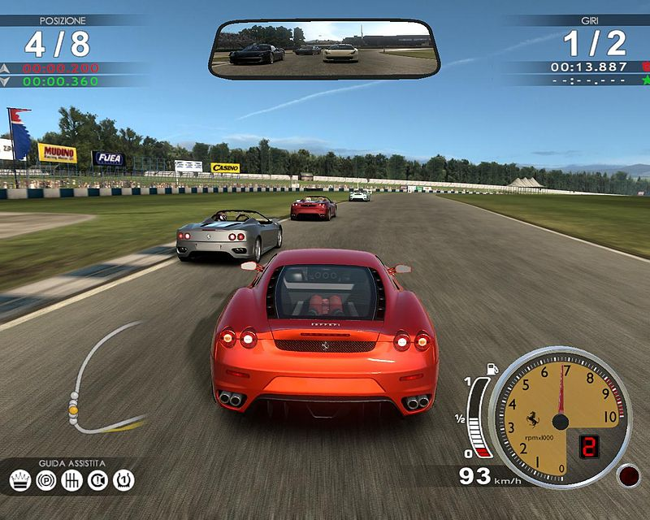

Règles du niveau 2
Pour ce deuxième niveau, vous ne serez plus que 3, le dernier de la course précédante a donc été éliminer. Ce nouveau circuit est un peu plus difficile car la présence de nid de poule sur l'asphalte amplifie la dureté du sol.
